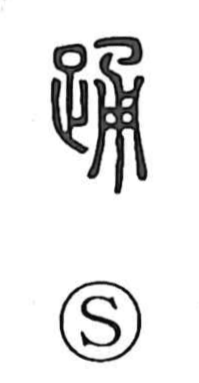

踊

Kun: odoru, odori | On: yo
to dance ・ dance ・ to leap
Explanation
This is a phono-semantic character: it portrays action with the legs and takes 甬 as its sound element, giving the on-yomi yo. The graph 甬 originally depicted a wooden bucket, and in words like 涌 it conveys the idea of something welling up. As the Shuowen glosses it, the sense is “to jump, to spring up,” so 踊 came to denote leaping with the legs and, by extension, dancing. In Japanese it is read odoru and odori for dance, and a variant form is written 踴.